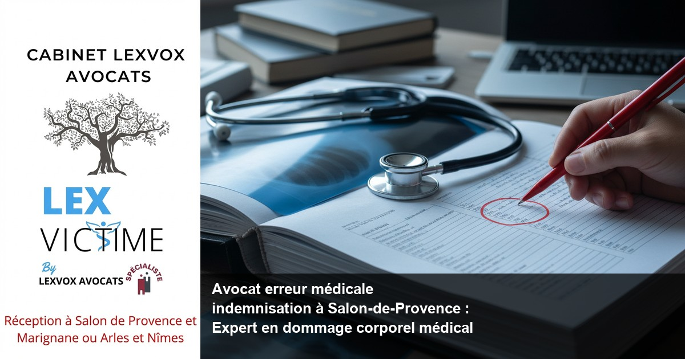

Face à une erreur médicale, obtenir une indemnisation juste nécessite l'accompagnement d'un avocat spécialisé. Le Cabinet LEXVOX AVOCATS, expert en dommage corporel depuis plus de 20 ans, défend vos droits à Salon-de-Provence. Me Patrice Humbert, premier avocat certifié IA de France et titulaire de la spécialisation CNB en dommage corporel, vous accompagne à chaque étape de votre procédure d'indemnisation. Consultation gratuite 30 minutes au 04 90 54 58 10.
Obtenir la meilleure indemnisation : indemnisation de vos préjudices et spécialisé en erreur médicale à Salon-de-Provence
L'expertise LEXVOX en erreur médicale
Lorsque vous êtes victime d'une erreur médicale à Salon-de-Provence, obtenir la meilleure indemnisation possible constitue votre droit fondamental. Le Cabinet LEXVOX AVOCATS dispose d'une expérience exclusive de plus de 20 ans en dommage corporel et en responsabilité médicale. Notre approche, reconnue par la spécialisation CNB, garantit une défense optimale de vos intérêts face aux établissements de santé, aux assureurs et à l'ONIAM (Office national d'indemnisation des accidents médicaux).
Pourquoi choisir un avocat expert en erreur médicale
Un avocat spécialisé en erreur médicale maîtrise les subtilités du droit médical et du droit de la santé. Contrairement à un avocat généraliste, un avocat expert en erreur médicale connaît parfaitement :
- La loi du 4 mars 2002 relative aux droits des malades et à la qualité du système de santé
- Les mécanismes d'indemnisation des accidents médicaux via la Commission de Conciliation et d'Indemnisation (CCI)
- Les spécificités du droit de la responsabilité médicale et réparation du préjudice
- Les techniques d'évaluation des préjudices corporels selon la nomenclature Dintilhac
Votre indemnisation de vos préjudices à Salon-de-Provence
Le Cabinet LEXVOX vous accompagne depuis son bureau de Salon-de-Provence, situé au cœur du département des Bouches-du-Rhône. Que vous résidiez à Salon-de-Provence, Aix-en-Provence, Arles, Marignane ou Marseille, nous intervenons pour défendre vos droits face aux professionnels de santé et établissements hospitaliers, notamment le Centre hospitalier de Salon-de-Provence.
Notre objectif : obtenir la meilleure indemnisation de tous vos préjudices, qu'ils soient économiques (perte de revenus, frais médicaux) ou extra-patrimoniaux (souffrances, préjudice esthétique, perte de qualité de vie).
Indemnisation des préjudices : victimes d'erreur médicale et infections nosocomiales à Salon-de-Provence
Les différents types d'erreurs médicales indemnisables
Une erreur médicale se définit comme une faute médicale commise par un professionnel de santé dans l'exercice de son activité. Les cas d'erreur médicale les plus fréquents traités par notre cabinet incluent :
Erreurs de diagnostic- Retard de diagnostic d'un cancer, d'une maladie infectieuse ou d'une pathologie cardiovasculaire
- Erreur d'interprétation d'examens radiologiques ou biologiques
- Confusion de dossiers médicaux entre patients
- Intervention sur le mauvais organe ou le mauvais côté
- Oubli de compresses ou instruments chirurgicaux
- Lésions nerveuses ou vasculaires peropératoires
- Prescription inadaptée ou contre-indiquée
- Erreur de dosage médicamenteux
- Administration du mauvais traitement
Les infections nosocomiales : un accident médical spécifique
Les infections nosocomiales représentent une catégorie particulière d'accident médical. Il s'agit d'infections contractées lors d'un soin dans un établissement de santé (hôpital, clinique, cabinet médical). Selon l'expérience du cabinet (20+ ans, centaines de dossiers), les infections nosocomiales constituent environ 25% des dossiers d'accidents médicaux traités.
Une infection nosocomiale peut être :
- Fautive : si elle résulte d'un manquement aux règles d'hygiène ou de bonnes pratiques
- Non fautive : si elle survient malgré le respect des protocoles
Défense et indemnisation des victimes à Salon-de-Provence
Le Cabinet LEXVOX assure la défense des victimes d'accidents médicaux à Salon-de-Provence et dans tout le département. Notre intervention couvre :
- L'analyse de votre dossier médical pour identifier l'erreur médicale ou l'infection nosocomiale
- Le recours au médecin conseil pour établir le lien de causalité entre la faute et vos préjudices
- La saisine de la CCI (Commission de Conciliation et d'Indemnisation) pour les accidents médicaux
- La négociation avec les assureurs pour maximiser votre indemnisation des préjudices
- L'action judiciaire devant le Tribunal judiciaire d'Aix-en-Provence si nécessaire
Infection nosocomiale : un accident médical et défendre vos droits à Salon-de-Provence
Comprendre l'infection nosocomiale
Une infection nosocomiale (ou infection associée aux soins) est une maladie infectieuse contractée dans un établissement de santé et absente lors de l'admission du patient. Pour être qualifiée de nosocomiale, l'infection doit généralement apparaître après un délai de 48 heures suivant l'hospitalisation.
Les infections nosocomiales les plus courantes incluent :
- Infections urinaires post-sondage
- Infections du site opératoire
- Pneumonies nosocomiales
- Infections sur cathéter
- Infections à staphylocoque doré résistant (SARM)
- Infections à clostridium difficile
Infection nosocomiale fautive ou sans faute ?
La distinction entre infection nosocomiale fautive et sans faute détermine la voie d'indemnisation :
Infection nosocomiale fautive Elle résulte d'un manquement aux règles d'hygiène, de stérilisation ou de bonnes pratiques médicales. Exemples :- Défaut de lavage des mains par le personnel soignant
- Matériel mal stérilisé
- Non-respect des protocoles d'asepsie en bloc opératoire
- Défaut de surveillance d'un patient à risque
Défendre vos droits face à une infection nosocomiale
Le Cabinet LEXVOX dispose d'une expertise reconnue pour défendre vos droits en cas d'infection nosocomiale contractée au Centre hospitalier de Salon-de-Provence ou dans tout autre établissement de santé de la région.
Notre démarche inclut :
- Investigation approfondie du dossier médical pour déterminer l'origine de l'infection
- Consultation d'experts médicaux spécialisés en hygiène hospitalière et infectiologie
- Qualification juridique : infection fautive ou accident médical non fautif
- Choix de la procédure optimale : CCI, ONIAM ou action judiciaire
- Évaluation complète des préjudices : souffrances, prolongation d'hospitalisation, séquelles, préjudice professionnel

Expertise médicale : avocat spécialisé et dommage corporel à Salon-de-Provence
L'expertise médicale est une étape cruciale
L'expertise médicale constitue le moment décisif de votre procédure d'indemnisation. Qu'elle soit amiable (CCI, ONIAM) ou judiciaire (ordonnée par le Tribunal judiciaire d'Aix-en-Provence), l'expertise médicale détermine :
- L'imputabilité : le lien de causalité entre l'erreur médicale et vos préjudices
- La consolidation : la date à laquelle votre état de santé est stabilisé
- Le taux d'AIPP : Atteinte à l'Intégrité Physique et Psychique (de 0 à 100%)
- Les postes de préjudices : évaluation chiffrée selon la nomenclature Dintilhac
Le rôle essentiel de votre avocat lors de l'expertise
Un avocat en droit médical et spécialisé en dommage corporel vous accompagne physiquement lors de l'expertise médicale pour :
Avant l'expertise- Préparer votre audition par l'expert
- Rassembler tous les documents médicaux pertinents
- Solliciter un médecin conseil pour vous assister
- Rédiger des dires et observations pour l'expert
- Veiller au respect de vos droits et de la contradiction
- Poser les questions essentielles à l'expert
- Faire constater tous vos préjudices
- Contrôler que l'expert examine tous les aspects de votre dommage corporel
- Analyser le rapport d'expertise
- Formuler des observations ou critiques si nécessaire
- Demander une contre-expertise ou expertise complémentaire si le rapport est insuffisant
- Utiliser l'expertise pour négocier l'indemnisation maximale
L'expertise médicale amiable (CCI/ONIAM) vs judiciaire
Expertise CCI/ONIAM Lorsque vous saisissez la Commission de Conciliation et d'Indemnisation ou l'ONIAM, une expertise médicale amiable est organisée. Cette expertise est souvent plus rapide (délais de 6 à 12 mois) mais nécessite une vigilance particulière car l'expert est missionné par l'organisme payeur. Expertise judiciaire Si vous saisissez le Tribunal judiciaire d'Aix-en-Provence, le juge désigne un expert judiciaire indépendant. Cette expertise offre plus de garanties de neutralité mais allonge les délais (souvent 18 à 36 mois pour l'ensemble de la procédure).Dans les deux cas, l'assistance d'un avocat spécialisé en dommage corporel et d'un médecin conseil est indispensable pour obtenir la meilleure indemnisation.
Me Patrice Humbert : avocat et docteur en médecine
Le Cabinet LEXVOX bénéficie d'un atout unique : Me Patrice Humbert est à la fois avocat et docteur en médecine. Cette double compétence permet une compréhension approfondie des aspects médicaux de votre dossier et une argumentation irréfutable face aux experts médicaux et médecins conseils des assureurs.
Cette expertise médicale et juridique conjointe s'avère particulièrement précieuse dans les dossiers complexes d'erreur médicale, où la compréhension fine des protocoles de soin et de la littérature médicale fait la différence.
Dossier médical : avocat en droit et un avocat à Salon-de-Provence
L'obtention de votre dossier médical : un droit fondamental
Pour prouver une erreur médicale et obtenir une indemnisation, l'accès à votre dossier médical complet est indispensable. La loi du 4 mars 2002 garantit à chaque patient le droit d'accéder à l'intégralité de son dossier médical.
Votre dossier médical contient :
- Les comptes rendus de consultation
- Les résultats d'examens (radiologie, biologie, anatomopathologie)
- Les comptes rendus opératoires
- Les prescriptions médicamenteuses
- Les notes infirmières et d'hospitalisation
- Les protocoles de soins appliqués
Comment obtenir votre dossier médical ?
Procédure standard- Adresser une demande écrite (courrier recommandé) à l'établissement de santé ou au médecin
- Préciser si vous souhaitez une copie papier ou numérique
- L'établissement dispose d'un délai de 8 jours (pour des soins récents) ou 2 mois (pour des archives anciennes)
- La communication peut être directe ou via un médecin intermédiaire si vous le souhaitez
- Formulation juridique appropriée de la demande
- Réactivité accrue de l'établissement de santé face à une demande d'avocat
- Vérification de l'exhaustivité du dossier communiqué
- Détection de modifications ou omissions suspectes
- Mise en demeure en cas de refus ou de délais abusifs
Analyse du dossier médical : identifier l'erreur
Une fois le dossier médical obtenu, votre avocat en droit de la santé procède à une analyse approfondie pour identifier :
Les erreurs de diagnostic- Examens non prescrits alors qu'ils s'imposaient
- Interprétation erronée de résultats
- Négligence de symptômes évocateurs
- Traitement inadapté à la pathologie
- Retard de prise en charge
- Prescription contre-indiquée au regard des antécédents
- Absence d'information sur les risques de l'intervention
- Défaut de recueil du consentement éclairé
- Information insuffisante sur les alternatives thérapeutiques
- Geste technique mal exécuté
- Complications peropératoires évitables
- Surveillance post-opératoire insuffisante
Protection de votre dossier médical
Attention : le dossier médical peut être modifié ou "complété" après une demande d'indemnisation. Votre avocat veillera à :
- Demander le dossier médical le plus tôt possible
- Faire constater par huissier toute anomalie ou modification ultérieure
- Obtenir les brouillons et documents de travail (pas uniquement les versions finales)
- Interroger le personnel soignant si nécessaire
Oniam à Salon-de-Provence : droits et indemnisation des victimes
Qu'est-ce que l'ONIAM ?
L'ONIAM (Office National d'Indemnisation des Accidents Médicaux, des Affections Iatrogènes et des Infections Nosocomiales) est un établissement public créé par la loi du 4 mars 2002. Son rôle est d'indemniser les victimes d'accidents médicaux, d'affections iatrogènes et d'infections nosocomiales sans faute, au titre de la solidarité nationale.
Coordonnées ONIAM : https://www.oniam.fr
Quand l'ONIAM intervient-il ?
L'ONIAM indemnise lorsque trois conditions sont réunies :
- Absence de faute : l'accident médical, l'infection nosocomiale ou l'affection iatrogène n'est pas imputable à une faute d'un professionnel de santé ou d'un établissement
- Gravité suffisante :
- Caractère anormal : le dommage présente un caractère d'anormalité au regard de l'état de santé comme de l'évolution prévisible
Un aléa thérapeutique indemnisable
Un aléa thérapeutique désigne une complication imprévisible et non fautive survenant lors d'un acte médical. Avant la loi du 4 mars 2002, les victimes d'un aléa thérapeutique n'étaient pas indemnisées car aucune faute ne pouvait être démontrée.
Désormais, si l'aléa thérapeutique présente une gravité suffisante (taux d'AIPP ≥ 24%), l'ONIAM indemnise la victime d'un accident médical, même en l'absence de faute du professionnel de santé.
Exemples d'aléas thérapeutiques indemnisés par l'ONIAM :
- Complication rare d'une anesthésie (tétraplégie, paraplégie)
- Infection nosocomiale malgré le respect des protocoles d'hygiène
- Réaction allergique imprévisible à un médicament
- Lésion nerveuse lors d'une intervention chirurgicale techniquement bien réalisée
Procédure d'indemnisation via l'ONIAM
1. Saisine de la CCI (Commission de Conciliation et d'Indemnisation) Avant de saisir l'ONIAM, vous devez déposer une demande auprès de la CCI compétente. Pour Salon-de-Provence, il s'agit de la CCI PACA (Provence-Alpes-Côte d'Azur), rattachée au Tribunal judiciaire de Marseille. 2. Expertise médicale La CCI mandate un expert médical pour examiner votre dossier et déterminer :- L'imputabilité de vos préjudices à l'accident médical
- Le caractère fautif ou non de l'accident
- La gravité de vos préjudices (taux d'AIPP, durée ITT)
- Si accident fautif : transmission du dossier à l'assureur du professionnel ou établissement de santé
- Si accident non fautif avec gravité suffisante : transmission à l'ONIAM
- Si critères non remplis : rejet de la demande (vous pouvez alors saisir le Tribunal judiciaire)
L'accompagnement LEXVOX pour l'ONIAM
Le Cabinet LEXVOX vous accompagne à chaque étape de la procédure ONIAM :
- Constitution du dossier CCI avec tous les éléments médicaux et justificatifs
- Assistance lors de l'expertise médicale avec médecin conseil
- Analyse de l'avis de la CCI et formulation d'observations si nécessaire
- Négociation de l'offre ONIAM pour obtenir la plus juste indemnisation
- Action judiciaire si l'offre est insuffisante ou la demande rejetée

Procédure d'indemnisation à Salon-de-Provence : les étapes avec LEXVOX AVOCATS
Étape 1 : Consultation initiale gratuite (30 minutes)
Lors de votre premier rendez-vous au bureau de Salon-de-Provence (ou dans l'un de nos 4 bureaux : Aix-en-Provence, Arles, Marignane), nous analysons votre situation :
- Exposé des faits et de vos préjudices
- Examen des premiers éléments médicaux
- Évaluation de la faisabilité d'une action en indemnisation
- Explication des voies de recours (CCI, ONIAM, action judiciaire)
- Présentation de nos honoraires transparents
Étape 2 : Constitution du dossier
Si vous décidez de nous confier votre dossier, nous procédons à :
Collecte des pièces médicales- Obtention du dossier médical complet auprès de l'établissement de santé ou du professionnel
- Rassemblement de tous les examens complémentaires
- Recueil des certificats médicaux actualisés
- Arrêts de travail et décomptes de sécurité sociale
- Justificatifs de revenus (salaires, avis d'imposition)
- Factures de frais médicaux et d'aménagement
- Attestations de tiers (famille, employeur, aidants)
- Étude approfondie du dossier médical par notre équipe
- Consultation de médecins conseils spécialisés
- Détermination de la stratégie juridique optimale
Étape 3 : Choix de la procédure
Selon la nature de votre accident médical, nous déterminons la voie la plus favorable :
Procédure amiable CCI/ONIAM- Plus rapide (12 à 18 mois en moyenne)
- Moins coûteuse (pas de frais de procédure judiciaire)
- Recommandée si les responsabilités sont claires
- Nécessaire si responsabilité contestée
- Permet d'obtenir des dommages-intérêts complémentaires
- Plus longue (2 à 4 ans) mais parfois plus favorable
- Possible si responsabilité reconnue par l'établissement de santé
- Permet un règlement rapide si l'assureur fait une offre acceptable
Étape 4 : Expertise médicale
L'expertise médicale est organisée selon la procédure choisie. Le Cabinet LEXVOX vous accompagne :
- Préparation : briefing complet, rédaction de dires, sollicitation d'un médecin conseil
- Assistance : présence physique de votre avocat et du médecin conseil lors de l'expertise
- Suivi : analyse du rapport, formulation d'observations, demande d'expertise complémentaire si nécessaire
Étape 5 : Évaluation et chiffrage des préjudices
Sur la base du rapport d'expertise, nous procédons au chiffrage détaillé de tous vos préjudices selon la nomenclature Dintilhac :
Préjudices patrimoniaux- Dépenses de santé actuelles et futures
- Frais divers (aménagement logement, véhicule adapté, tierce personne)
- Pertes de gains professionnels actuels et futurs
- Incidence professionnelle
- Déficit fonctionnel temporaire et permanent
- Souffrances endurées
- Préjudice esthétique
- Préjudice d'agrément
- Préjudice sexuel
- Préjudice d'établissement
Étape 6 : Négociation de l'indemnisation
Nous négocions avec l'ONIAM, l'assureur ou le professionnel de santé pour obtenir une indemnisation à la hauteur de vos préjudices. Notre expérience de 20+ ans et des centaines de dossiers traités nous permet d'argumenter efficacement chaque poste de préjudice.
Si l'offre est insuffisante, nous n'hésitons pas à saisir le Tribunal judiciaire d'Aix-en-Provence pour défendre vos intérêts.
Étape 7 : Versement de l'indemnisation
Une fois l'accord trouvé ou la décision de justice rendue, nous veillons au versement effectif de votre indemnisation dans les délais légaux. Nous gérons également les interactions avec les organismes sociaux (Sécurité sociale, mutuelle, prévoyance) pour les recours subrogatoires.
À chaque étape, vous êtes informé et associé aux décisions. Notre obligation est de moyens, pas de résultat, mais notre engagement est total pour obtenir la meilleure indemnisation possible.Questions fréquentes sur avocat erreur médicale à Salon-de-Provence
Combien coûte un avocat pour une erreur médicale à Salon-de-Provence ?
Le Cabinet LEXVOX pratique une tarification transparente adaptée aux victimes d'erreur médicale :
- Part fixe : à partir de 700 EUR HT pour la constitution et le suivi du dossier
- Part variable au résultat : 10 à 15% de l'indemnisation obtenue (hors provisions)
Lors de la consultation gratuite de 30 minutes, nous vous présentons un devis détaillé et personnalisé. Contactez-nous au 04 90 54 58 10.
Quel est le délai pour agir après une erreur médicale ?
Le délai de prescription pour une action en responsabilité médicale est de 10 ans à compter de la consolidation de votre état de santé (et non de la date de l'erreur). Cependant, il est fortement recommandé d'agir le plus tôt possible pour :
- Préserver les preuves (dossier médical, témoignages)
- Éviter la modification du dossier médical
- Bénéficier d'une procédure plus rapide
Puis-je obtenir une indemnisation sans prouver de faute médicale ?
Oui, grâce au dispositif ONIAM créé par la loi du 4 mars 2002. Si vous êtes victime d'un accident médical, d'une infection nosocomiale ou d'une affection iatrogène sans faute, vous pouvez être indemnisé si :
- Votre taux d'AIPP est ≥ 24%, OU
- Votre ITT est ≥ 6 mois, OU
- Le dommage a entraîné le décès
Combien de temps dure une procédure d'indemnisation ?
Les délais varient selon la procédure :
- CCI/ONIAM amiable : 12 à 24 mois (de la saisine au versement)
- Négociation directe assureur : 6 à 18 mois si responsabilité reconnue
- Procédure judiciaire : 2 à 4 ans (de l'assignation au jugement définitif)
Que faire si l'hôpital refuse de communiquer mon dossier médical ?
Le refus de communication du dossier médical est illégal. Vous disposez d'un droit d'accès garanti par la loi du 4 mars 2002 (consultable sur https://www.legifrance.gouv.fr).
Si l'établissement de santé refuse ou tarde à communiquer votre dossier médical :
- Mise en demeure par votre avocat avec délai de 8 jours
- Saisine de la Commission d'accès aux documents administratifs (CADA) pour les hôpitaux publics
- Référé devant le Tribunal judiciaire d'Aix-en-Provence pour obtenir la communication sous astreinte
- Signalement à l'Ordre des médecins ou à l'Agence Régionale de Santé (ARS) PACA
Puis-je changer d'avocat en cours de procédure ?
Oui, vous pouvez changer d'avocat à tout moment, c'est votre droit absolu. Si vous n'êtes pas satisfait de votre avocat actuel, nous pouvons reprendre votre dossier à chaque étape de la procédure :
- Avant ou après l'expertise médicale
- Après l'avis de la CCI
- En cours de négociation avec l'ONIAM ou l'assureur
- En procédure judiciaire (avec déclaration de substitution d'avocat)
Synthèse : votre droit à la réparation intégrale
Toute victime d'une erreur médicale dispose d'un droit fondamental à la réparation intégrale de ses préjudices. Que vous soyez victime d'une faute médicale commise par un professionnel de santé ou d'un accident médical non fautif, l'indemnisation des préjudices constitue votre droit. Un avocat spécialisé en droit de la santé maîtrise les mécanismes complexes permettant d'obtenir une indemnisation. Les victimes d'erreur médicale et les victimes d'accidents médicaux peuvent saisir la commission de conciliation et d'indemnisation (CCI) ou solliciter l'Office national d'indemnisation des accidents médicaux (ONIAM) pour les accidents médicaux non fautifs présentant une gravité suffisante. La loi du 4 mars 2002 a révolutionné le droit de la responsabilité médicale et réparation du préjudice en créant un système solidaire d'indemnisation des victimes d'accidents médicaux, même sans faute. Un avocat expert en erreur médicale analyse votre dossier médical, identifie les préjudices subis et met en œuvre la stratégie optimale pour obtenir la meilleure indemnisation possible. Face à un établissement de santé, un médecin conseil d'assureur ou l'ONIAM, vous avez besoin d'un avocat spécialisé en erreur médicale pour défendre vos droits. Les victimes d'erreurs médicales, qu'elles résident à Salon-de-Provence, Marseille ou ailleurs en PACA, bénéficient de la défense et indemnisation des victimes assurée par le Cabinet LEXVOX. Chaque cas d'erreur médicale est unique : infection nosocomiale, erreur chirurgicale, défaut de diagnostic... Qu'il s'agisse d'une erreur médicale à marseille ou à Salon-de-Provence, qu'elle relève d'une faute médicale ou d'un accident médical non fautif, la victime d'une erreur médicale mérite une indemnisation à la hauteur de sa souffrance. Un avocat en droit médical et un avocat expérimenté comme Me Patrice Humbert, avocat et docteur en médecine, apporte une expertise unique pour les accidents médicaux. La défense des victimes passe par l'analyse du dossier médical, l'assistance lors de l'expertise médicale, et la négociation avec les assureurs ou l'ONIAM. Obtenir une indemnisation nécessite de chiffrer précisément les préjudices subis par la victime : souffrances, déficit fonctionnel, pertes de revenus. Obtenir la meilleure indemnisation implique un accompagnement à chaque étape par un avocat spécialisé qui connaît les mécanismes d'indemnisation des victimes d'accidents médicaux. Les victimes d'accidents, qu'elles soient victime d'un accident de la route ou d'un accident médical dont elles ont été victimes, doivent obtenir la réparation intégrale de leurs préjudices. Le Tribunal judiciaire d'Aix-en-Provence constitue la juridiction compétente pour défendre vos droits si la procédure amiable échoue. Que la médicale dont vous avez été victime relève d'une infection nosocomiale fautive ou d'un aléa thérapeutique sans faute, obtenir la réparation de vos préjudices est un droit. Être indemnisé correctement nécessite l'intervention d'un professionnel de santé juridique qui comprend les enjeux médicaux et maîtrise le droit de la responsabilité médicale et réparation. L'expertise médicale est une étape cruciale où votre avocat et votre médecin conseil défendent vos intérêts pour garantir une indemnisation juste et complète. Les préjudices corporels, économiques et moraux doivent tous être évalués pour une réparation du préjudice complète. Seul un avocat expérimenté peut analyser les subtilités de chaque dossier et obtenir une indemnisation de vos préjudices optimale, tenant compte de toutes les particularités de votre situation.
Procédure d'indemnisation à Salon-de-Provence : les étapes avec LEXVOX
Phase 1 : Analyse initiale et stratégie
Consultation gratuite Lors de votre rendez-vous au bureau de Salon-de-Provence, nous évaluons votre situation en 30 minutes. Cette analyse gratuite permet de :- Qualifier juridiquement l'accident médical (erreur médicale fautive, infection nosocomiale, aléa thérapeutique)
- Identifier les responsables potentiels (établissement de santé, professionnel de santé, défaut de matériel)
- Estimer la gravité de vos préjudices
- Proposer la voie d'indemnisation optimale
- Part fixe : à partir de 700 EUR HT
- Part variable : 10-15% du montant net d'indemnisation
- Aucun frais caché, facturation claire à chaque étape
Phase 2 : Constitution du dossier et saisine
Obtention du dossier médical complet Nous sollicitons immédiatement l'établissement de santé (Centre hospitalier de Salon-de-Provence, cliniques privées...) pour obtenir :- Tous les documents médicaux (consultations, examens, comptes rendus opératoires)
- Les protocoles de soins appliqués
- Les transmissions infirmières
- Les résultats d'examens complémentaires
- Analyser le dossier médical sous l'angle technique
- Identifier les manquements aux bonnes pratiques
- Établir le lien de causalité entre l'erreur et les préjudices
- Préparer l'argumentation médicale
- La CCI PACA (pour accidents médicaux fautifs ou non) : dépôt d'une requête détaillée avec pièces médicales et justificatifs de préjudices
- L'ONIAM directement (via la CCI) pour les accidents non fautifs graves
- Le Tribunal judiciaire d'Aix-en-Provence si responsabilité contestée ou procédure amiable inadaptée
Phase 3 : Expertise médicale contradictoire
Préparation intensive Avant l'expertise médicale ordonnée par la CCI ou le Tribunal, nous préparons méticuleusement votre dossier :- Rédaction de "dires" détaillés pour l'expert
- Briefing personnel avec vous (2 à 3 heures) pour préparer votre audition
- Sollicitation d'un médecin conseil spécialisé pour vous assister
- Rassemblement de tous les documents médicaux complémentaires
- Votre avocat (Me Patrice Humbert ou l'un de ses collaborateurs)
- Un médecin conseil spécialisé dans la discipline concernée
- État antérieur et évolution depuis l'accident médical
- Durée d'ITT (incapacité temporaire de travail)
- Date de consolidation
- Taux d'AIPP (atteinte à l'intégrité physique et psychique)
- Description détaillée de tous les postes de préjudices (souffrances, esthétique, agrément, professionnel, sexuel...)
- Vérification de la cohérence médicale
- Contrôle du respect de votre mission d'expertise
- Identification d'éventuelles omissions ou erreurs
- Formulation de dires complémentaires ou demande de contre-expertise si nécessaire
Phase 4 : Évaluation financière et négociation
Chiffrage détaillé des préjudices Sur la base du rapport d'expertise, nous procédons au chiffrage complet selon la nomenclature Dintilhac : Préjudices patrimoniaux temporaires (avant consolidation)- Dépenses de santé actuelles (DAS) : frais médicaux, hospitalisation, rééducation
- Frais divers (FD) : aménagement temporaire, aide à domicile
- Pertes de gains professionnels actuels (PGPA) : salaires perdus pendant l'ITT
- Dépenses de santé futures (DSF) : traitements à vie, prothèses, appareillages
- Frais de logement adapté (FLA) : aménagement définitif du domicile
- Frais de véhicule adapté (FVA)
- Assistance par tierce personne (ATP) : aide humaine permanente
- Pertes de gains professionnels futurs (PGPF) : carrière compromise
- Incidence professionnelle (IP) : perte de chance d'évolution
- Déficit fonctionnel temporaire (DFT) : période d'incapacité avant consolidation
- Souffrances endurées (SE) : échelle de 1 à 7
- Préjudice esthétique temporaire (PET)
- Déficit fonctionnel permanent (DFP) : basé sur le taux d'AIPP
- Préjudice d'agrément (PA) : impossibilité de pratiquer loisirs et sports
- Préjudice esthétique permanent (PEP) : échelle de 1 à 7
- Préjudice sexuel (PS)
- Préjudice d'établissement (PE) : impossibilité de fonder une famille
- L'ONIAM si accident non fautif via la CCI
- L'assureur du professionnel ou établissement de santé si responsabilité reconnue
- Le médecin conseil de l'assureur pour défendre notre évaluation